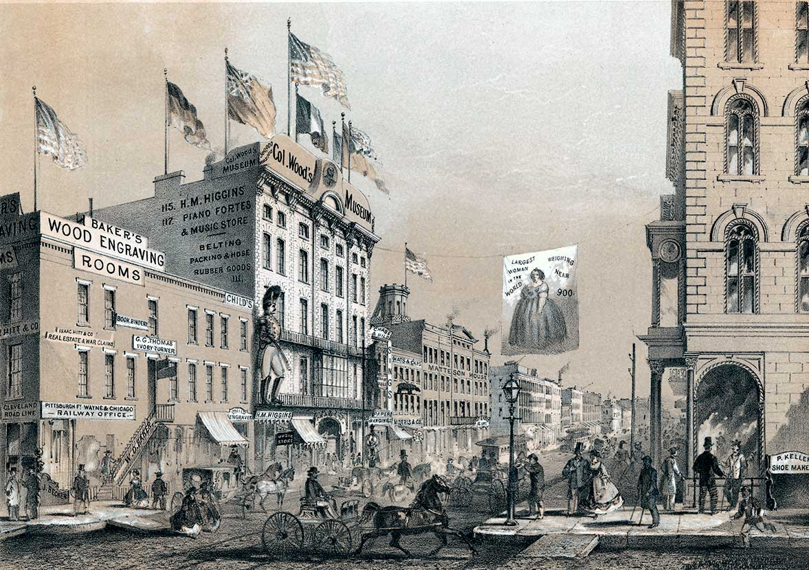
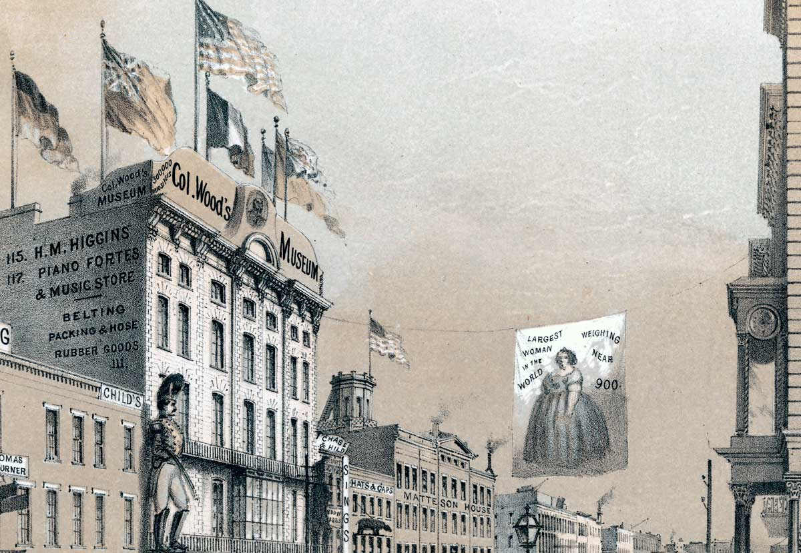
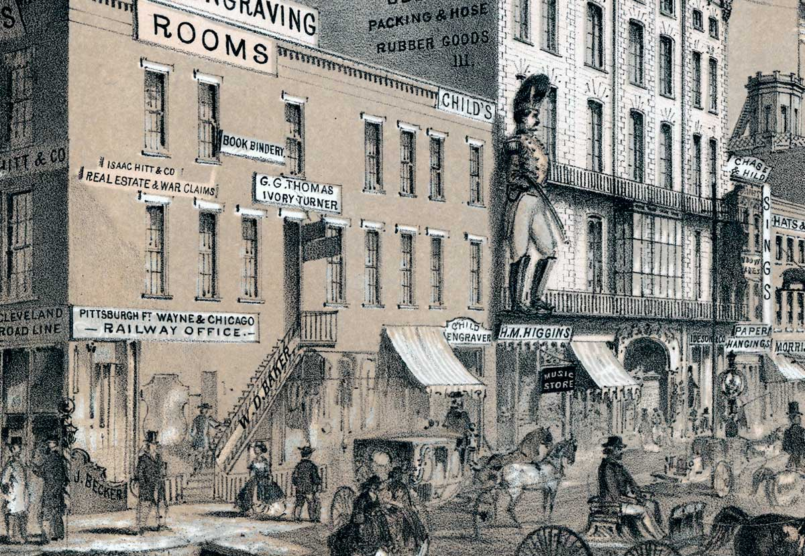
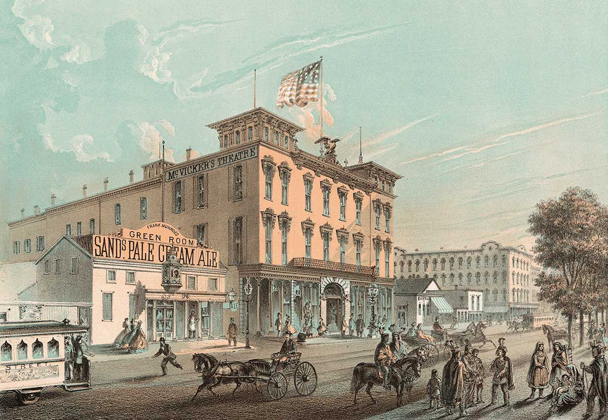
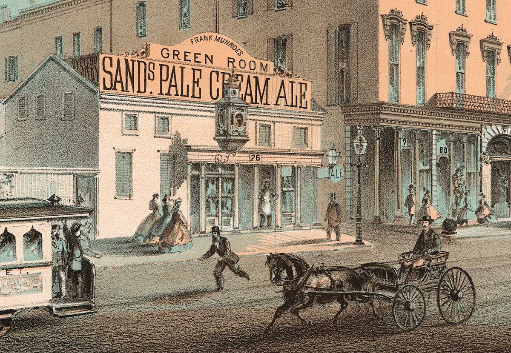
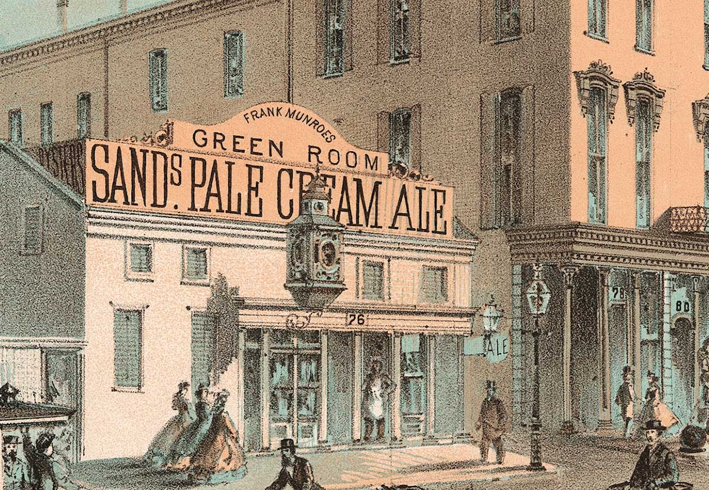
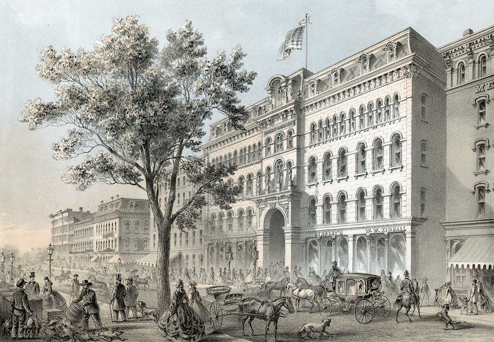
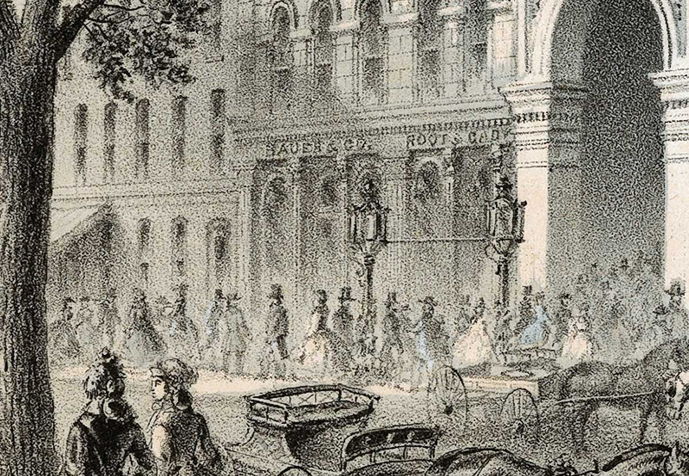
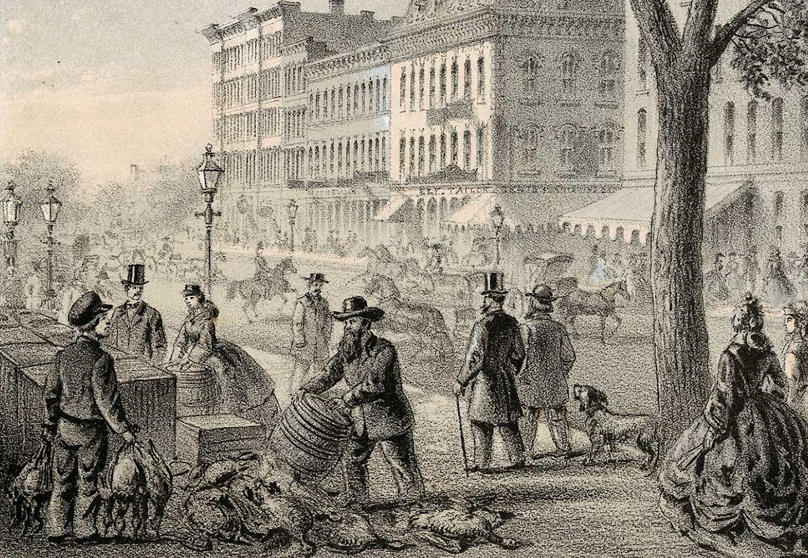

Tour Cultural Attractions
Stop in at Chicago’s world-famous theaters and museums.
Colonel Wood’s Museum
-

Colonel Wood’s Museum
No tour of Chicago is complete without a visit to Colonel Joseph Wood’s Museum on Randolph Street, just north of Clark. Guarded by a giant statue of a soldier, the museum has more than 150,000 curiosities of every kind. Next-door is a Civil War claims office.
iChi-63082
-

Curiosities
The museum displays objects from all over the world, including hundreds of stuffed birds and animals and two Egyptian mummies.
iChi-63083
-

Claims office
Civil War veterans and widows can file for government pensions at the offices of Isaac Hitt. Chicago sent thousands of men to fight for the Union, many of whom never returned. Those who survived can often be seen here.
iChi-63084
McVicker’s Theatre
-

McVicker’s Theatre
Chicago’s most popular theater is located on Madison Street between Dearborn and State. It opened for business in 1857, can seat up to 2,000 people, and hosts both serious dramas and light-hearted comedies. Next door is the Green Room, a popular stop for thirsty theatergoers.
iChi-62078
-

Madison Street
In 1833 James R. Thompson surveyed and named Chicago’s streets. Similar to many others, this thoroughfare is named for a famous person, in this case, President James Madison.
iChi-63085
-

Green Room
Owned and operated by Frank Munroe, the Green Room serves Sands Pale Ale, one of the most popular beers brewed in Chicago. In 1855 Chicagoans staged a mass rally against prohibition and voted it down in a statewide referendum.
iChi-63086
Crosby’s Opera House
-

Crosby’s Opera House
Chicago’s first opera house is located on Washington Street between State and Dearborn. A grand theater is on the second floor while Root & Cady and other companies have offices on the ground level. Across the street, local vendors sell fresh meat and produce.
iChi-62079
-

Root & Cady
Founded in 1858, this music company publishes popular Civil War songs. Their all-time top-seller is The Battle Cry of Freedom, which has sold an estimated 700,000 copies.
iChi-62079d2
-

Vendors
Chicago’s street vendors sell an abundance of fresh produce and meat from nearby farms and hunting grounds.
iChi-62079d1